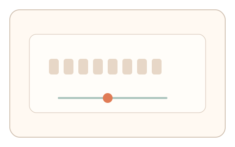
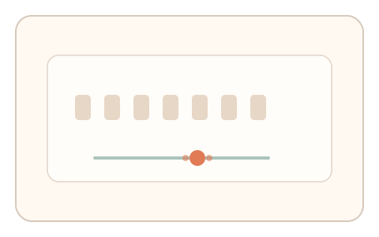
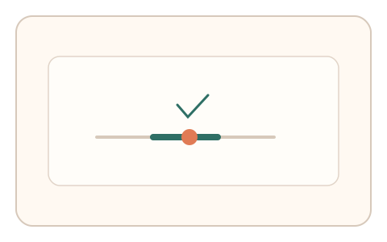

#72
视觉思考范式：文字与符号
已扩展
字距舒适阈值
让用户调节字符间距到“最易读”状态，以舒适阈值与调整节奏形成验证信号。
概念原文
用户调节字符间距直到“最易读”的状态，系统记录舒适阈值与调整节奏。可做 2-3 轮建立稳定区间。
把“可读性主观阈值”转化为生理‑认知签名。
研究背景
字距会显著影响可读性与阅读速度。人类对舒适间距存在稳定偏好，调整过程会出现微调与停顿模式。通过多轮记录可得到个体与群体分布，用于区分脚本行为。
核心机制
- 提供文本样本与字距调节滑杆。
- 用户调节到“最易读”的舒适区间。
- 记录最终间距、调整路径与节奏。
- 多轮不同样本建立稳定阈值。
用户流程
- 步骤 1：用户看到文本样本与滑杆。
- 步骤 2：用户调整字距并确认舒适状态。
- 步骤 3：系统记录阈值与节奏并判定。
判定信号
舒适间距范围
人类偏好集中在稳定区间。
调整速度与微调次数
真实选择通常伴随细微回调。
判定逻辑
间距需落在人类舒适区间且多轮一致；过度极端或一次到位判异常。
对抗面
- 脚本选择默认或平均间距直接提交
- 重放真实用户的调节轨迹
防御与缓解
- 随机化文本样本与字体风格
- 引入细微噪声降低参数直接映射
- 叠加滑动速度与停顿信号进行多信号判定
可达性与风险
允许字号调整与高对比模式，对阅读障碍用户提供更大间距的替代通道。
- 设备渲染差异影响字距感知
- 语言与字体差异导致阈值漂移
可视化状态

状态 1：字距调节
文本样本与字距滑杆。

状态 2：舒适微调
用户微调字距以找到舒适区间。

状态 3：阈值判定
对比舒适区间与一致性。
参考资料
Letter spacing
说明字距对阅读的影响。
Legibility
说明可读性与视觉识别因素。